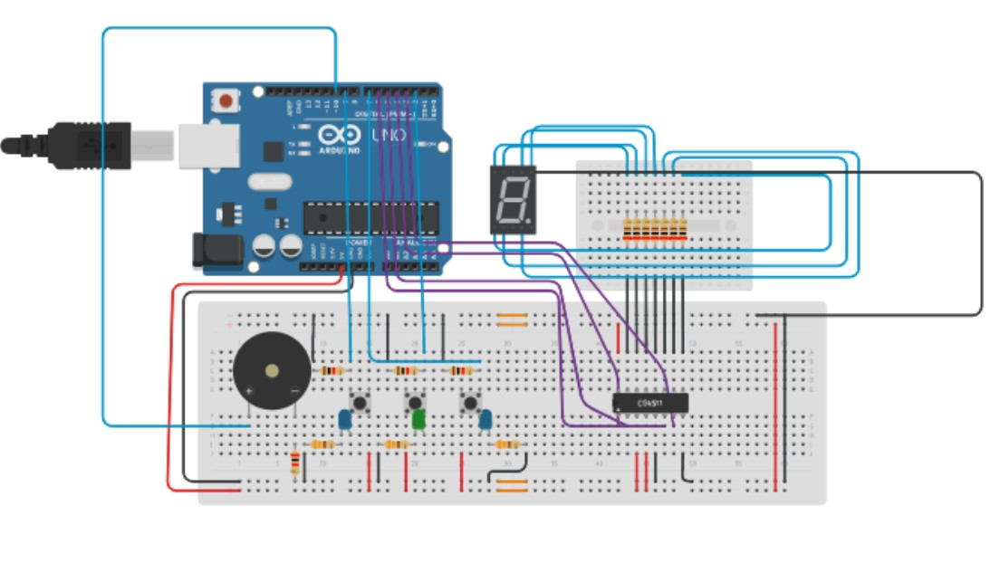
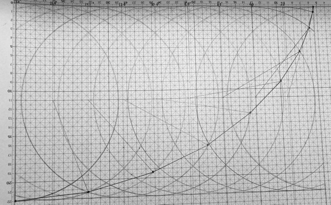
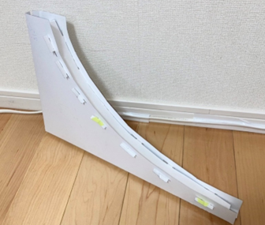

成果物
授業などにおける成果物の一覧です。
情報処理Ⅱ
tinkercadにおいて、Arduinoを用いた簡易的な音楽プレイヤーシステムを構築しました。
左右の青色のLEDがついているボタンで曲番号を選択できます。曲番号は、7セグメントディスプレイに表示されます。
緑のLEDがついているボタンを押すと、選択した曲番号の曲が再生されます。
１．峠のわが家(アメリカ民謡)
２．アニーローリー(スコットランド民謡)
３．久しき昔(イギリス民謡)
４．ボーナストラック
CAD設計製図

Creoを用いて、授業内コンペティション用のマイナスドライバを設計しました。
結果はクラス内で5位となりました。
Kicadを用いて、授業内コンペティション用のArduinoシールドを設計しました。
特別研究
一言で説明すると、一般科目の卒業研究です。本校3年次に半年間行います。
一般科目の教員のもとに配属され、与えられる、もしくは自分で持ち込んだテーマを研究します。
 
私は、サイクロイド曲線の特性について研究をしました。
身の回りのサイクロイドが使用されているものの調査や、実際にサイクロイドの模型を製作し、実証実験を行いました。
前のページへ戻る